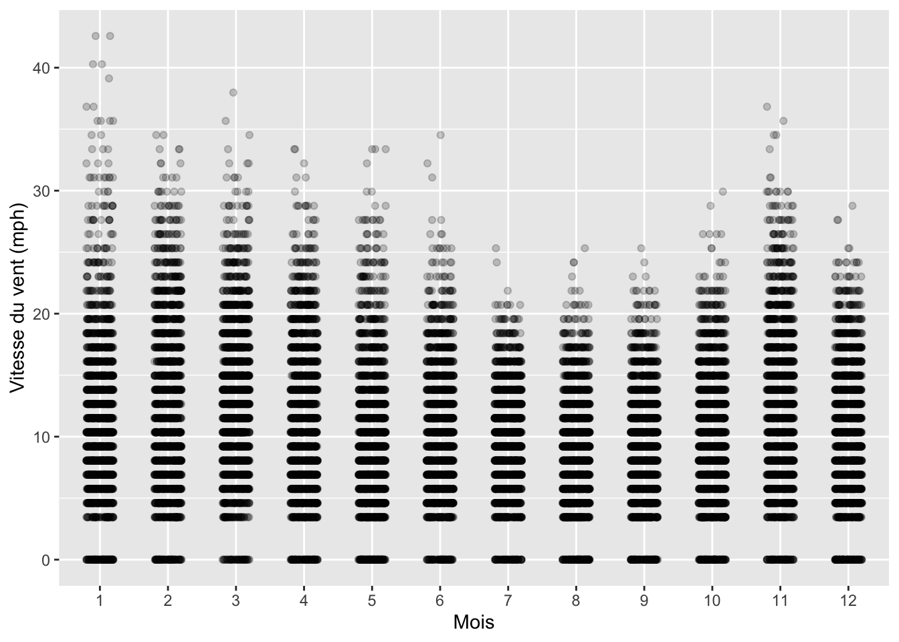
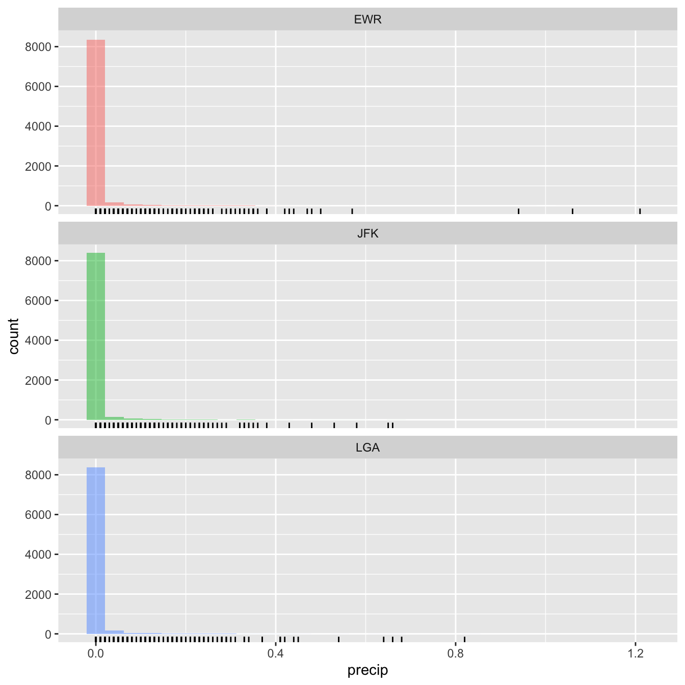
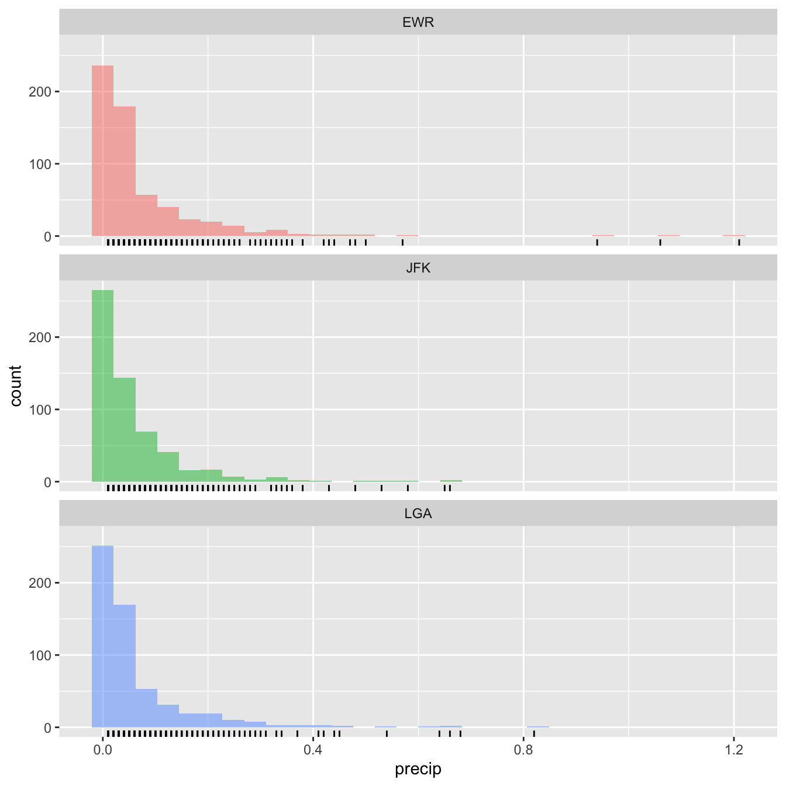

library(tidyverse)
library(skimr)
library(palmerpenguins)
library(nycflights13)Mise en mémoire des packages nécessaires.
4.1 Correction de l’exercice de la Section 1.2.5
- Avec le tableau
diamondsdu packageggplot2, faites un tableau indiquant combien de diamants de chaque couleur on dispose.
diamonds |>
count(color)# A tibble: 7 × 2
color n
<ord> <int>
1 D 6775
2 E 9797
3 F 9542
4 G 11292
5 H 8304
6 I 5422
7 J 2808- Examinez le tableau
weatherdu packagenycflights13et lisez son fichier d’aide pour comprendre à quoi correspondent les données et comment elles ont été acquises.
weather
?weahter- À partir du tableau
weatherfaites un tableau indiquant les vitesses de vents minimales, maximales et moyennes, enregistrées chaque mois dans chaque aéroport de New York. Indice : les 3 aéroports de New York sont Newark, LaGuardia Airport et John F. Kennedy, notés respectivementEWR,LGAetJFKdans la variableorigin.
windy <- weather |>
summarise(max_wind = max(wind_speed, na.rm = TRUE),
min_wind = min(wind_speed, na.rm = TRUE),
moy_wind = mean(wind_speed, na.rm = TRUE),
.by = c(origin, month))
windy# A tibble: 36 × 5
origin month max_wind min_wind moy_wind
<chr> <int> <dbl> <dbl> <dbl>
1 EWR 1 42.6 0 9.87
2 EWR 2 1048. 0 12.2
3 EWR 3 29.9 0 11.6
4 EWR 4 25.3 0 9.63
5 EWR 5 33.4 0 8.49
6 EWR 6 34.5 0 9.55
7 EWR 7 20.7 0 9.15
8 EWR 8 21.9 0 7.62
9 EWR 9 23.0 0 8.03
10 EWR 10 26.5 0 8.32
# ℹ 26 more rows- Sachant que les vitesses du vent sont exprimées en miles par heure, certaines valeurs sont-elles surprenantes ? À l’aide de la fonction
filter(), éliminez la ou les valeurs aberrantes.
Oui, les vitesses de vent supérieures à 100 mph devraient être rares :
windy |>
filter(max_wind > 100)# A tibble: 1 × 5
origin month max_wind min_wind moy_wind
<chr> <int> <dbl> <dbl> <dbl>
1 EWR 2 1048. 0 12.2Ici, 1048 mph est impossible. Il s’agit soit d’un dysfonctionnement de l’appareil de mesure, soit d’une erreur de saisie. Pour éliminer cette valeur aberrante, on utilise filter() :
windy2 <- weather |>
filter(wind_speed <= 500) |>
summarise(max_wind = max(wind_speed, na.rm = TRUE),
min_wind = min(wind_speed, na.rm = TRUE),
moy_wind = mean(wind_speed, na.rm = TRUE),
.by = c(origin, month))
windy2# A tibble: 36 × 5
origin month max_wind min_wind moy_wind
<chr> <int> <dbl> <dbl> <dbl>
1 EWR 1 42.6 0 9.87
2 EWR 2 31.1 0 10.7
3 EWR 3 29.9 0 11.6
4 EWR 4 25.3 0 9.63
5 EWR 5 33.4 0 8.49
6 EWR 6 34.5 0 9.55
7 EWR 7 20.7 0 9.15
8 EWR 8 21.9 0 7.62
9 EWR 9 23.0 0 8.03
10 EWR 10 26.5 0 8.32
# ℹ 26 more rows- En utilisant les données de vitesse de vent du tableau
weather, produisez le graphique suivant :
weather |>
filter(wind_speed < 500) |>
ggplot(aes(x = factor(month), y = wind_speed)) +
geom_jitter(width = 0.2, height = 0, alpha = 0.2) +
labs(x = "Mois",
y = "Vitesse du vent (mph)")
- À votre avis :
- pourquoi les points sont-ils organisés en bandes horizontales ?
Parce que l’appareil de mesure enregistre probablement des vitesses de vent arrondies au mile par heure le plus proche (pas de valeurs enregsitrées), ou parce que les valeurs ont été arrondies à l’entier le plus proche avant enregistrement dans la base de données.
- pourquoi n’y a-t-il jamais de vent entre 0 et environ 3 miles à l’heure (mph) ?
Cela est probablement dû au seuil de détection de l’appareil d’enregistrement qui est incapable de détecter des des vitesses inferieures à ce seuil. Cela ne veut pas dire qu’il n’y a jamais eu de vent inférieur à 3 mph.
- Sachant qu’en divisant des mph par 1.151 on obtient des vitesses en nœuds, que nous apprend cette commande :
sort(unique(weather$wind_speed)) / 1.151 [1] 0.000000 2.999427 3.999235 4.999044 5.998853 6.998662
[7] 7.998471 8.998280 9.998089 10.997897 11.997706 12.997515
[13] 13.997324 14.997133 15.996942 16.996751 17.996560 18.996368
[19] 19.996177 20.995986 21.995795 22.995604 23.995413 24.995222
[25] 25.995030 26.994839 27.994648 28.994457 29.994266 30.994075
[31] 31.993884 32.993692 33.993501 34.993310 36.992928 910.825873Que l’appareil n’enregistre que des vitesses de vent entières, en nœuds, à partir de 3 nœuds (3, 4, 5, etc.). La transformation en mph n’est probablement effectuées qu’ensuite et explique les erreurs d’arrondis.
4.2 Correction de l’exercice de la Section 1.5.3
En utilisant les fonctions de résumé abordées jusqu’ici et le tableau weather, répondez aux questions suivante :
- Dans quel aéroport de New York les précipitations moyennes ont-elle été les plus fortes en 2013 ?
weather |>
summarise(precip_moyenne = mean(precip), .by = origin) |>
arrange(desc(precip_moyenne))# A tibble: 3 × 2
origin precip_moyenne
<chr> <dbl>
1 EWR 0.00504
2 LGA 0.00438
3 JFK 0.00398Les précipitations horaires moyennes les plus fortes sont enregistrées dans l’aéroport EWR (Newark). Si on s’intéresse plutôt aux précipitations mensuelles :
weather |>
group_by(origin, month) |>
summarise(precip_tot = sum(precip)) |> # Cumul de précipitation chaque mois et dans chaqe aéroport
summarise(precip_moy = mean(precip_tot)) |> # Calcul des moyennes mensuelles pour chaque aeroport
arrange(desc(precip_moy)) # Tri par ordre décroissant de précipitations moyennes`summarise()` has grouped output by 'origin'. You can override using the
`.groups` argument.# A tibble: 3 × 2
origin precip_moy
<chr> <dbl>
1 EWR 3.66
2 LGA 3.18
3 JFK 2.89Logiquement, c’est toujours dans l’aéroport de Newark que les précipitations mensuelles moyennes sont les plus fortes (3,66 pouces par mois en moyenne).
- Dans quel aéroport de New York la vitesse du vent moyenne était-elle la plus forte en 2013 ? Quelle est cette vitesse ?
weather |>
summarise(wind_moyenne = mean(wind_speed, na.rm = TRUE),
.by = origin) |>
arrange(desc(wind_moyenne))# A tibble: 3 × 2
origin wind_moyenne
<chr> <dbl>
1 JFK 11.5
2 LGA 10.6
3 EWR 9.46Le vent moyen le plus fort est observé à JFK, et vaut 11.5 miles à l’heure. Attention, ça n’est pas le vent le plus fort observé, mais bien le vent moyen le plus fort.
- Dans quel aéroport de New York les rafales de vent étaient-elles les plus variables en 2013 ? Quel indice statistique vous donne cette information et quelle est sa valeur ?
weather |>
summarise(rafales_var = var(wind_gust, na.rm = TRUE),
.by = origin) |>
arrange(desc(rafales_var))# A tibble: 3 × 2
origin rafales_var
<chr> <dbl>
1 JFK 37.5
2 LGA 32.8
3 EWR 31.2C’est à l’aéroport JFK que les rafales de vent étaient les plus variables en 2013. La variance de 37.5 mph\(^2\) nous renseigne sur cette variabilité. Une autre façon d’arriver à cette même conclusion consiste à utiliser la fonction skim() sur la variable wind_gust et les données groupées par aéroport (variable origin) :
weather |>
select(origin, wind_gust) |>
group_by(origin) |>
skim()| Name | group_by(select(weather, … |
| Number of rows | 26115 |
| Number of columns | 2 |
| _______________________ | |
| Column type frequency: | |
| numeric | 1 |
| ________________________ | |
| Group variables | origin |
Variable type: numeric
| skim_variable | origin | n_missing | complete_rate | mean | sd | p0 | p25 | p50 | p75 | p100 | hist |
|---|---|---|---|---|---|---|---|---|---|---|---|
| wind_gust | EWR | 6901 | 0.21 | 24.14 | 5.58 | 16.11 | 19.56 | 23.02 | 27.33 | 58.69 | ▇▅▁▁▁ |
| wind_gust | JFK | 7199 | 0.17 | 27.56 | 6.13 | 16.11 | 23.02 | 26.47 | 31.07 | 66.75 | ▇▇▁▁▁ |
| wind_gust | LGA | 6678 | 0.23 | 25.14 | 5.73 | 16.11 | 20.71 | 24.17 | 27.62 | 62.14 | ▇▅▁▁▁ |
Ici, c’est l’indice noté sd qui nous renseigne. Il s’agit de l’écart-type qui est exprimé dans la même unité que les données de départ. La variabilité des rafales de vent est donc bien la plus forte à l’aéroport JFK, avec un écart-type de 6.13 mph.
- Les précipitation dans les 3 aéroports de New-York ont-elles une distribution symétrique ?
weather |>
ggplot(aes(x = precip, fill = origin)) +
geom_histogram(alpha = 0.5, show.legend = FALSE) +
geom_rug() +
facet_wrap(~origin, ncol = 1)`stat_bin()` using `bins = 30`. Pick better value with `binwidth`.
La distribution des précipitations est très clairement asymétrique, avec un très grand nombre de relevés avec aucune précipitation (ce qui explique la très grande barre à la valeur 0), puis une diminution rapide des fréquences auxquelles les précipitations importantes sont observées. D’ailleurs, même en retirant les enregistrement où aucune précipitation n’est détectée, la distribution n’est pas non plus symétrique :
weather |>
filter(precip > 0 ) |>
ggplot(aes(x = precip, fill = origin)) +
geom_histogram(alpha = 0.5, show.legend = FALSE) +
geom_rug() +
facet_wrap(~origin, ncol = 1)`stat_bin()` using `bins = 30`. Pick better value with `binwidth`.
- Quelle est la température médiane observée en 2013 tous aéroports confondus ?
weather |>
summarise(temo_med = median(temp, na.rm = TRUE))# A tibble: 1 × 1
temo_med
<dbl>
1 55.4La température médiane, tous aéroports confondue, observée en 2013, vaut 55.4 degrés Fahrenheit.
- Tous aéroports confondus, quel est le mois de l’année où la température a été la plus variable en 2013 ? Quelles étaient les températures minimales et maximales observées ce mois-là ?
weather |>
group_by(month) |>
summarise(temp_var = var(temp, na.rm = TRUE),
temp_sd = sd(temp, na.rm = TRUE),
temp_min = min(temp, na.rm = TRUE),
temp_max = max(temp, na.rm = TRUE)) |>
arrange(desc(temp_var))# A tibble: 12 × 5
month temp_var temp_sd temp_min temp_max
<int> <dbl> <dbl> <dbl> <dbl>
1 11 109. 10.4 21.0 71.1
2 1 105. 10.2 10.9 64.4
3 12 99.6 9.98 18.0 71.6
4 5 93.7 9.68 13.1 93.0
5 10 78.3 8.85 33.1 89.1
6 4 77.2 8.79 30.9 84.0
7 9 71.7 8.47 48.0 95
8 6 56.9 7.55 54.0 93.9
9 7 50.7 7.12 64.0 100.
10 2 48.8 6.98 16.0 55.9
11 3 39.1 6.25 26.1 60.1
12 8 27.0 5.19 59 90.0C’est en Novembre que les températures ont été les plus variables avec un écart-type de 10.4 degrés Fahrenheit. Ce même mois, la température minimale observée était de 21ºF et la température maximale de 71.1ºF.
4.3 Correction de l’exercice de la Section 3.7
- Avec le tableau
penguins, calculez les grandeurs suivantes pour chaque espèce de manchot et chaque sexe :
- la moyenne de la longueur des nageoires
- la variance de la longueur des nageoires
- l’écart-type de la longueur des nageoires
- l’erreur standard de la longueur moyenne des nageoires
- la moyenne de la masse corporelle
- la variance de la masse corporelle
- l’écart-type de la masse corporelle
- l’erreur standard de la masse corporelle moyenne
Attention : pensez à retirer les individus dont le sexe est inconnu.
resum <- penguins |>
filter(!is.na(sex)) |>
summarise(moy_L_nageoire = mean(flipper_length_mm, na.rm = TRUE),
var_L_nageoire = var(flipper_length_mm, na.rm = TRUE),
sd_L_nageoire = sd(flipper_length_mm, na.rm = TRUE),
se_L_nageoire = sd_L_nageoire/sqrt(n()),
moy_mass = mean(body_mass_g, na.rm = TRUE),
var_mass = var(body_mass_g, na.rm = TRUE),
sd_mass = sd(body_mass_g, na.rm = TRUE),
se_mass = sd_mass/sqrt(n()),
.by = c(species, sex))
resum# A tibble: 6 × 10
species sex moy_L_nageoire var_L_nageoire sd_L_nageoire se_L_nageoire
<fct> <fct> <dbl> <dbl> <dbl> <dbl>
1 Adelie male 192. 43.6 6.60 0.772
2 Adelie female 188. 31.3 5.60 0.655
3 Gentoo female 213. 15.2 3.90 0.512
4 Gentoo male 222. 32.2 5.67 0.726
5 Chinstrap female 192. 33.1 5.75 0.987
6 Chinstrap male 200. 35.7 5.98 1.02
moy_mass var_mass sd_mass se_mass
<dbl> <dbl> <dbl> <dbl>
1 4043. 120278. 347. 40.6
2 3369. 72566. 269. 31.5
3 4680. 79286. 282. 37.0
4 5485. 98068. 313. 40.1
5 3527. 81415. 285. 48.9
6 3939. 131144. 362. 62.1- Vérifiez avec la fonction
skim()que les moyennes et écart-types calculés ci-dessus sont corrects.
penguins |>
filter(!is.na(sex)) |>
group_by(species, sex) |>
select(flipper_length_mm, body_mass_g) |>
skim()Adding missing grouping variables: `species`, `sex`| Name | select(…) |
| Number of rows | 333 |
| Number of columns | 4 |
| _______________________ | |
| Column type frequency: | |
| numeric | 2 |
| ________________________ | |
| Group variables | species, sex |
Variable type: numeric
| skim_variable | species | sex | n_missing | complete_rate | mean | sd | p0 | p25 | p50 | p75 | p100 | hist |
|---|---|---|---|---|---|---|---|---|---|---|---|---|
| flipper_length_mm | Adelie | female | 0 | 1 | 187.79 | 5.60 | 172 | 185.00 | 188.0 | 191.00 | 202 | ▁▂▇▅▁ |
| flipper_length_mm | Adelie | male | 0 | 1 | 192.41 | 6.60 | 178 | 189.00 | 193.0 | 197.00 | 210 | ▃▅▇▃▁ |
| flipper_length_mm | Chinstrap | female | 0 | 1 | 191.74 | 5.75 | 178 | 187.25 | 192.0 | 195.75 | 202 | ▂▅▇▇▆ |
| flipper_length_mm | Chinstrap | male | 0 | 1 | 199.91 | 5.98 | 187 | 196.00 | 200.5 | 203.00 | 212 | ▁▇▅▅▂ |
| flipper_length_mm | Gentoo | female | 0 | 1 | 212.71 | 3.90 | 203 | 210.00 | 212.0 | 215.00 | 222 | ▁▇▆▅▂ |
| flipper_length_mm | Gentoo | male | 0 | 1 | 221.54 | 5.67 | 208 | 218.00 | 221.0 | 225.00 | 231 | ▁▆▇▇▆ |
| body_mass_g | Adelie | female | 0 | 1 | 3368.84 | 269.38 | 2850 | 3175.00 | 3400.0 | 3550.00 | 3900 | ▅▅▇▅▅ |
| body_mass_g | Adelie | male | 0 | 1 | 4043.49 | 346.81 | 3325 | 3800.00 | 4000.0 | 4300.00 | 4775 | ▃▇▇▇▃ |
| body_mass_g | Chinstrap | female | 0 | 1 | 3527.21 | 285.33 | 2700 | 3362.50 | 3550.0 | 3693.75 | 4150 | ▁▂▇▇▂ |
| body_mass_g | Chinstrap | male | 0 | 1 | 3938.97 | 362.14 | 3250 | 3731.25 | 3950.0 | 4100.00 | 4800 | ▃▇▇▂▂ |
| body_mass_g | Gentoo | female | 0 | 1 | 4679.74 | 281.58 | 3950 | 4462.50 | 4700.0 | 4875.00 | 5200 | ▂▅▇▇▃ |
| body_mass_g | Gentoo | male | 0 | 1 | 5484.84 | 313.16 | 4750 | 5300.00 | 5500.0 | 5700.00 | 6300 | ▂▆▇▅▂ |
- Avec ces données synthétiques faites le graphique suivant :
resum |>
ggplot(aes(x = sex, y = moy_L_nageoire)) +
geom_point() +
geom_errorbar(aes(ymin = moy_L_nageoire - se_L_nageoire,
ymax = moy_L_nageoire + se_L_nageoire),
width = 0.15) +
facet_wrap(~species) +
labs(x = "Sexe",
y = "Longueur des nageoires (mm)",
title = "Moyennes (et erreurs standard) des longueurs de nageoires\nchez les mâles et les femelles de trois espèces de manchots") +
theme_bw()